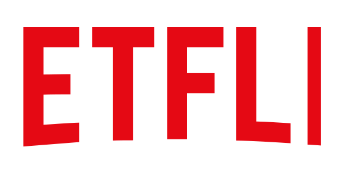

BASED ON YOUR READING HISTORY
5 key differences between a junior and a Senior designer
There are many factors in a different organizations that determine things like a final title, so let's say this list is more about mindset.
May 31, 2019 - 8 min read
BASED ON YOUR READING HISTORY
The great balloon of User Experience: from UX to Product Design
This is about my journey from me being an Information Architect to UX Designer to Product Designer, and what I think about the current.
Dec 5, 2018 - 9 min read
BASED ON YOUR READING HISTORY
The Netflix Data Scientist Interview
Netflix Data Science Interview Questions
Feb 24 - 6 min read
